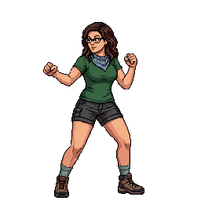
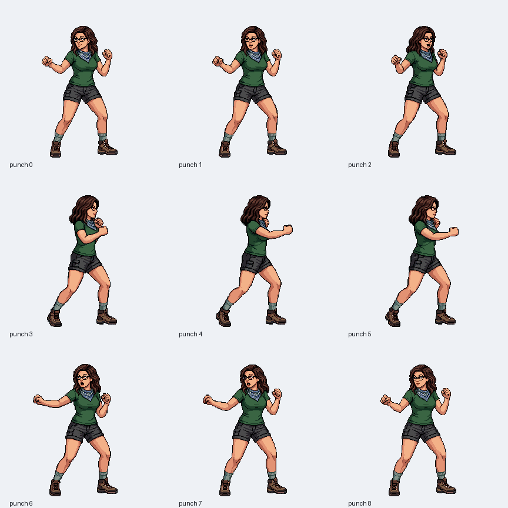

Rear-hand punch
Approved so far: current selection in PixelLab gallery gallery:1792158063158.
Nine 256×256 frames, 100ms each. The sequence keeps the screen-left facing and extends the far-side fist toward screen-left. This is the selected source-art version; runtime integration remains pending.
Open PixelLab Creator and find gallery item 1792158063158.
The earlier six-frame selection gallery:1792158337812 remains available. An alternative punch is in progress; its gallery reference will be added when provided.
View the earlier rejected nine-frame generation


Rejected: frames 3–5 turn her into a screen-right-facing profile and extend the fist screen-right.